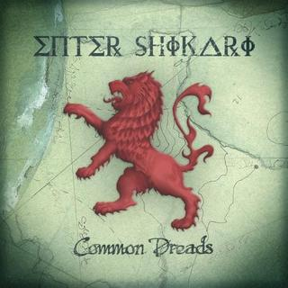
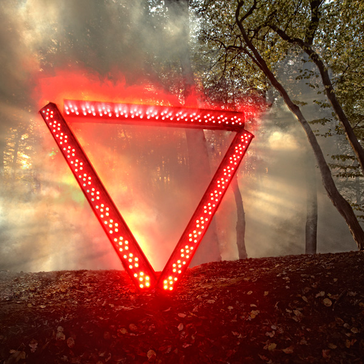
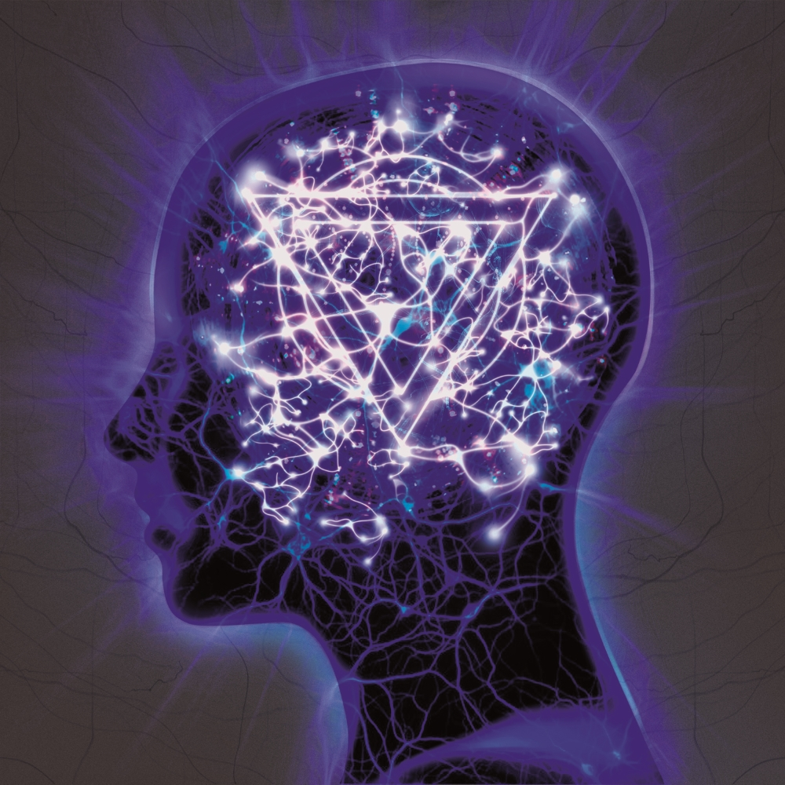
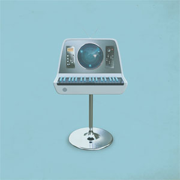
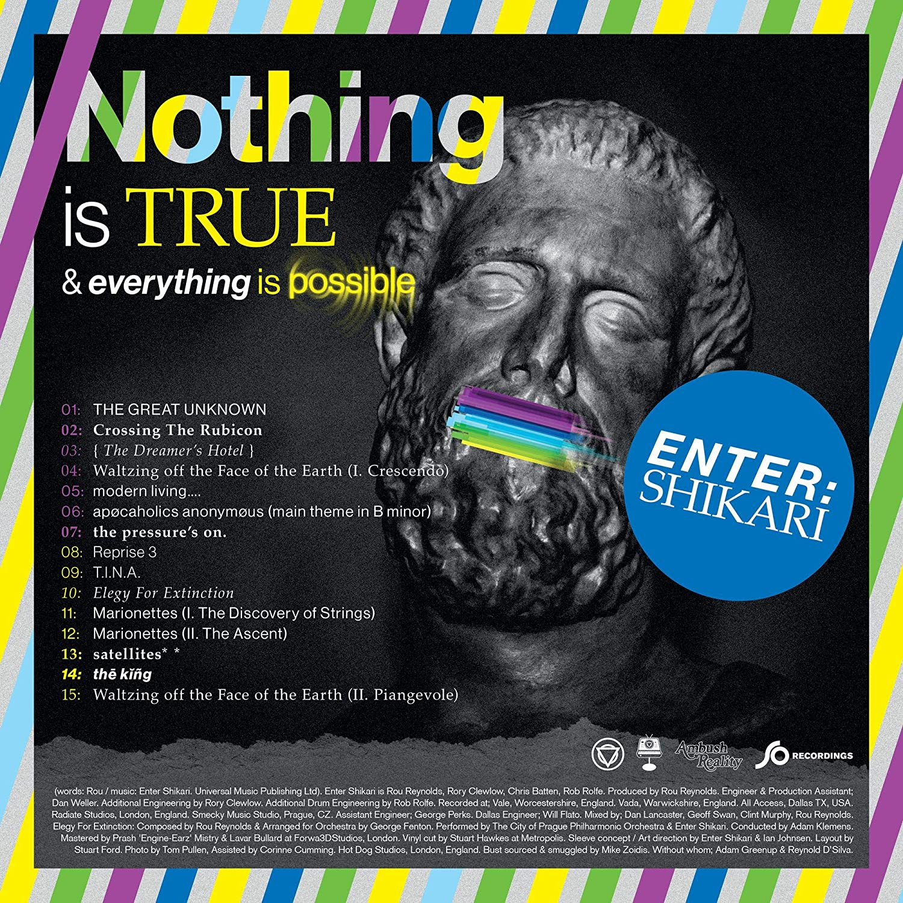

Enter Shikari - британская рок-группа с дикой и позитивной энергетикой, несущая добро и счастье в этот мир.
Сами они говорят: "посыл творчества группы такой: «Если мы строим нашу жизнь вокруг любви и единства, то это всё, что имеет значение»"
Вот эти ребята
В 1999 Рау, Крис и Роб объединились в группу Hybrid. В 2003 к ним присоединился Рори и группа была переименована в Enter Shikari. С тех пор состав группы не менялся.
Take to the Skies (2007)
 Common Dreads (2009)
 A Flash Flood of Colour (2012)
 The Mindsweep (2015)
 The Spark (2015)
 Nothing is true & everything is possible (2020)
 A kiss for the whole world cover (2023)
A kiss for the whole world cover (2023)
Наслаждайтесь прослушиванием и помните: "Noting is true and everything is possible!".